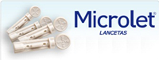
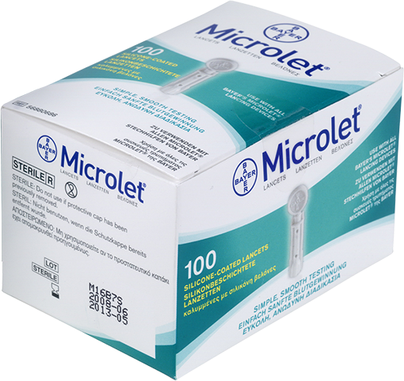

Microlet® lancetas


DESCRIPCIÓN:
Lancetas recomendadas para obtener muestras de sangre por punción capilar con dispositivos de punción MicroletTM.
CARACTERÍSTICAS:
Diseñado para todos aquellos procesos de evaluación clínica donde se requiera obtener una muestra de sangre completa por punción capilar de manera rápida, segura, estéril, eficiente y sin dolor en la punción y la cicatrización.
Cada toma de muestra de sangre capilar obtenida por punción requiere una lanceta nueva, estéril y en perfecto estado para asegurar una muestra óptima analítica. Para obtener óptimos resultados utilice con el dispositivo de punción Microlet® 2.
Las lancetas Microlet® tienen las siguientes características:
- Lancetas estériles.
- Lancetas con punta tribiselada en forma de diamante, lo que se traduce en una fácil penetración que no genera lesiones.
- La lanceta cuenta con un recubrimiento de silicón, para reducir la sensación de dolor al momento de la punción.
- Debido a su diseño, la Lanceta Microlet® está considerada como desechable y de un solo uso.
Otros:
Nivel de punción profunda: 2.025-2.425 mm.
Nivel de punción fina: 0.67-1.22 mm.
El uso continuado de una misma lanceta deforma y deteriora su punta, lo que provoca un dolor innecesario durante el pinchazo y heridas de lenta curación. Además, los residuos de sangre en la aguja pueden causar infecciones si vuelve a usarse.
Consulte a su médico.
Registro: 0792E2011 SSA
DATOS COMPLEMENTARIOS: Para mayor información favor de comunicarse a:
Ascensia Diabetes Care México, S. de R.L. de C.V.
Teléfonos: 9171-1057, 01-800-3352-6266
e-mail: support@contournext.com
www.diabetes.ascensia.com